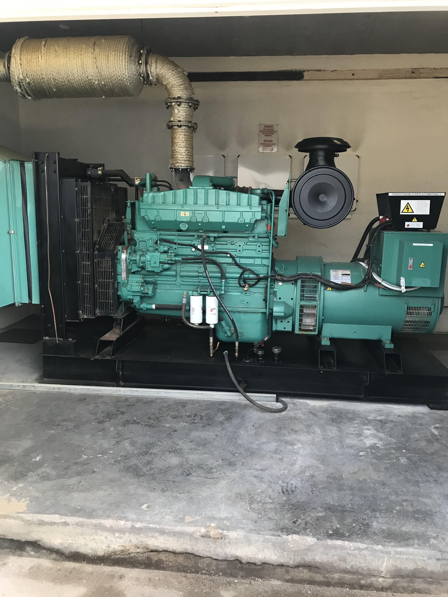
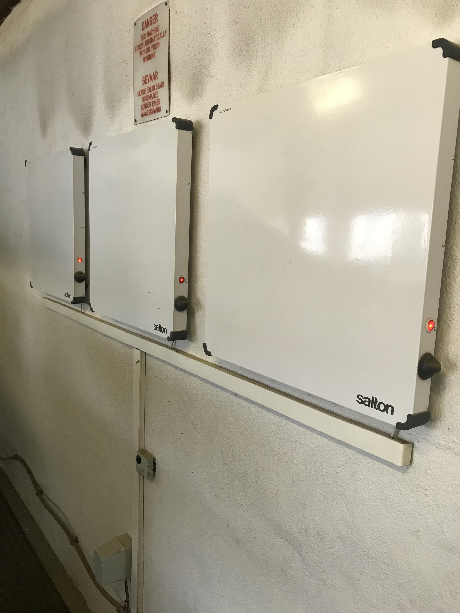
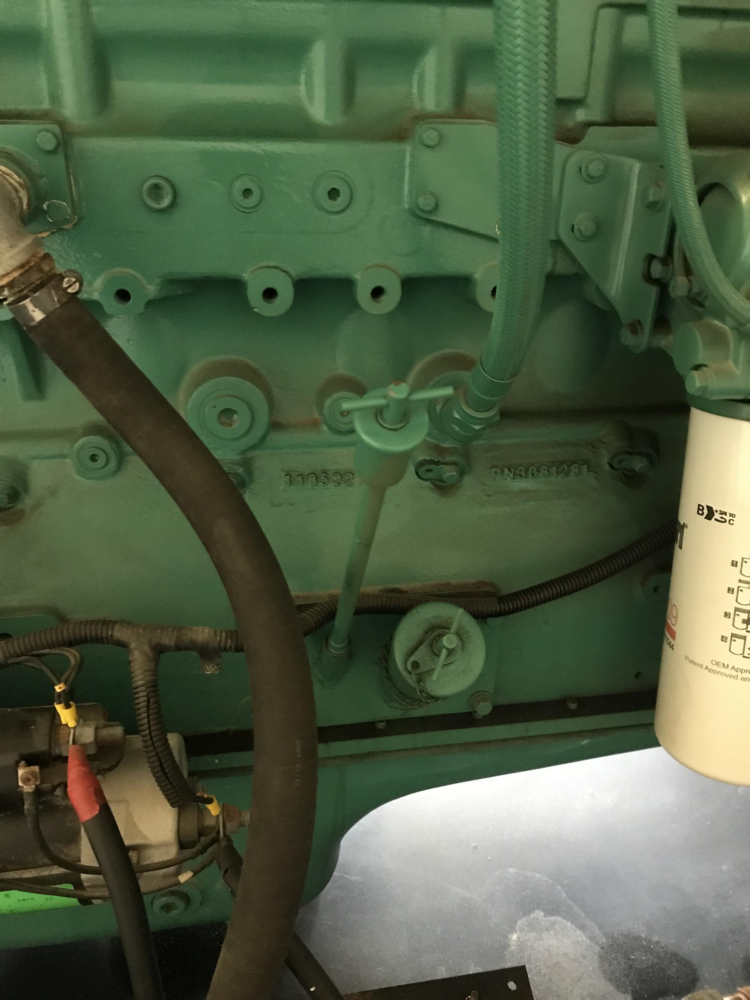
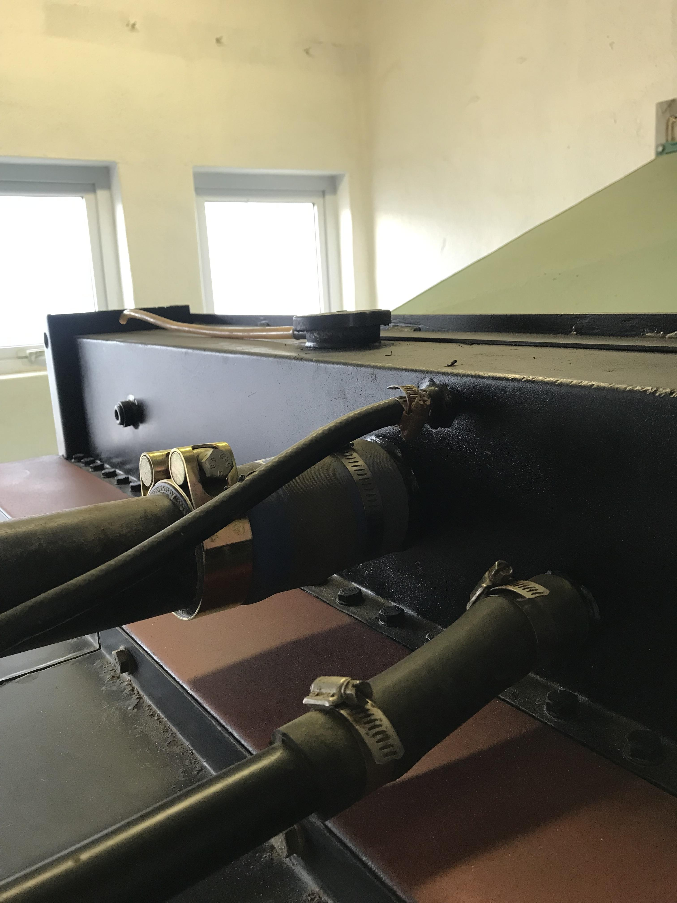
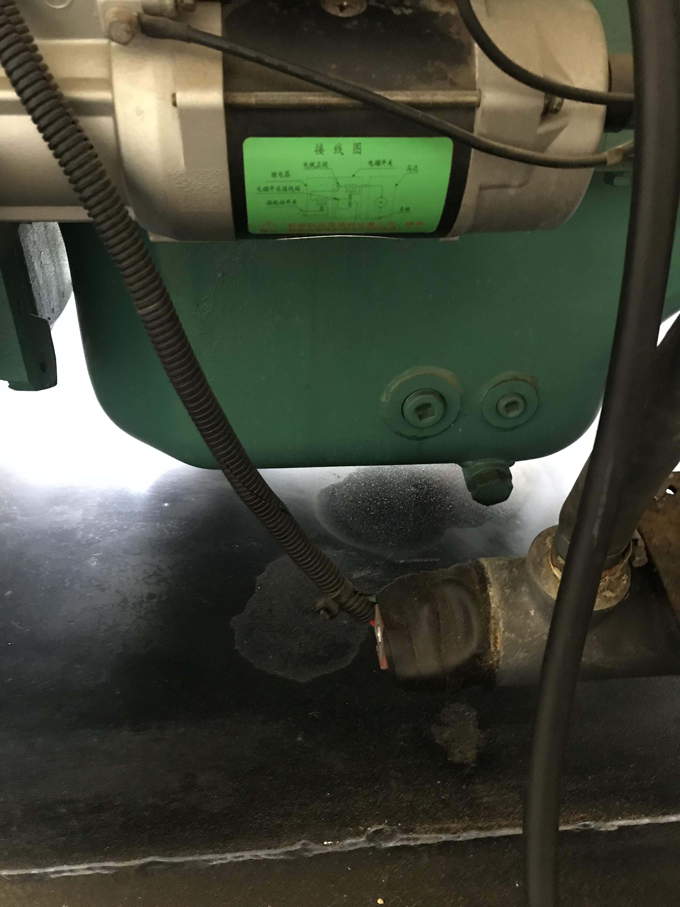
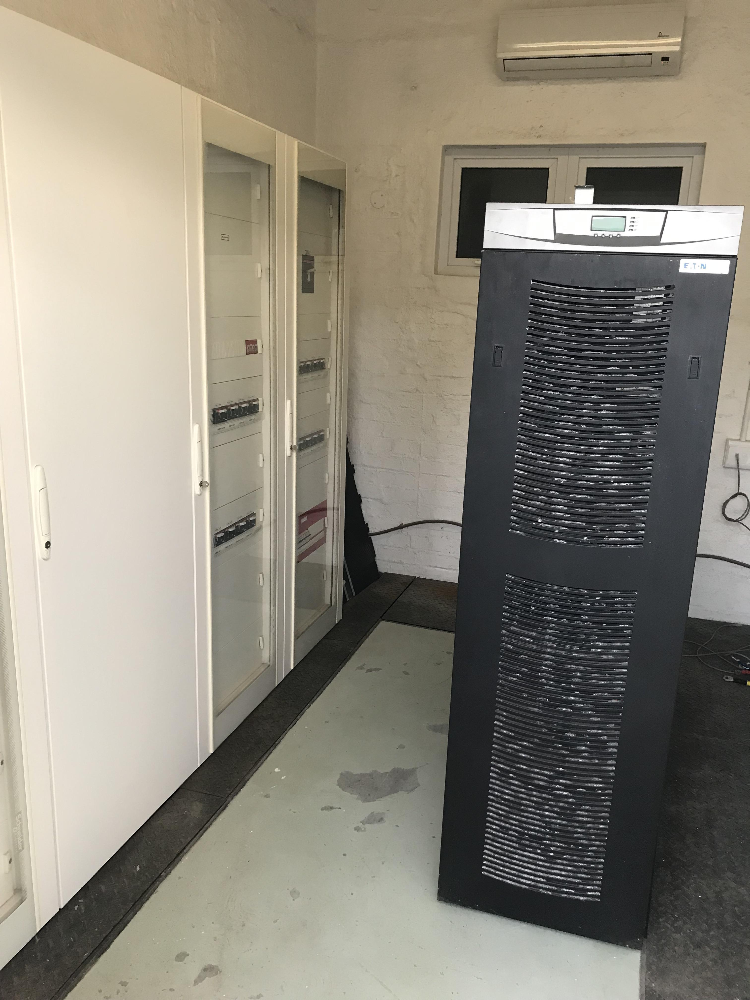
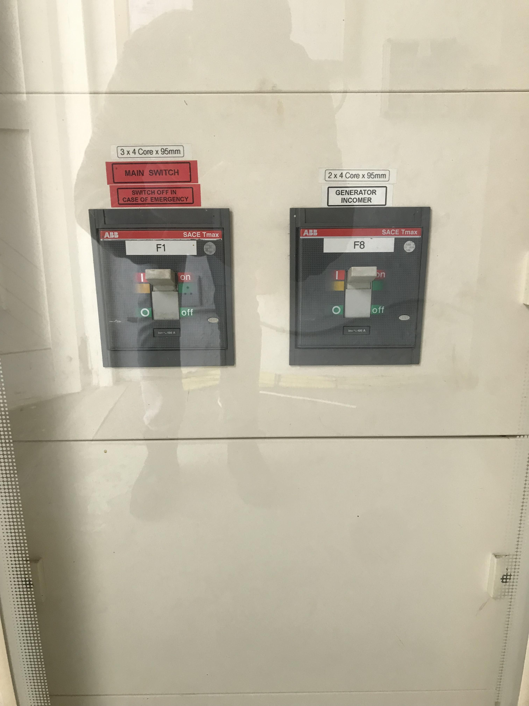
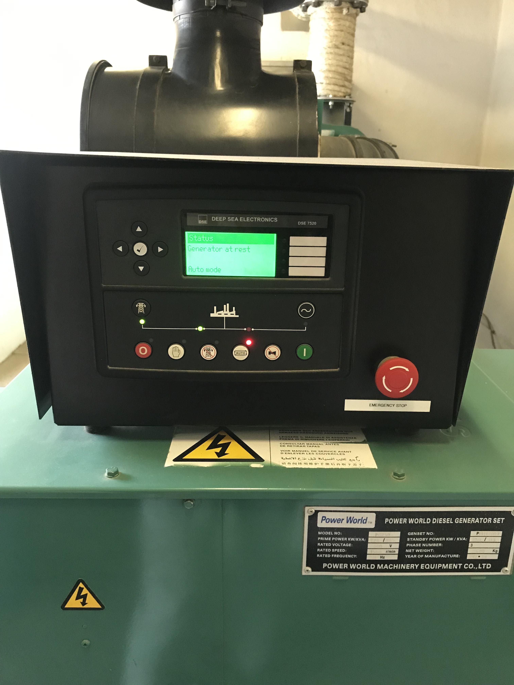

5 Back-up generator
The back-up generator is found in Room 10 (Figure 5.3), opposite the MFMR garage. It is used as the main power supply during municipal power cuts that directly affect NATMiRC.

5.1 Generator Test
The testing procedure described for the back-up generator (referred to as the “Generator” throughout) should be done once a month. This can be done by one competent person. It is important to inform Mr. Chris Bartholomae, who will inform the rest of the MFMR staff, prior to testing the Generator
5.1.1 Generator inspection
Use the wall opposite the room entrance as a reference point when following instructions regarding specific parts of the Generator, such that you are facing the generator with your back to that wall (Figure 5.2).

This is a quick inspection to ensure the Generator has enough essential materials for the test e.g., oil and water. Most of the inspection points can be found around the back of the Generator.
- Check the oil level (Figure 5.3 (a)).
- This can be done by pulling out the dipstick near the bottom of the tank, along its’ lateral axis.
- If oil levels are low, the generator can be filled with spare oil from the Diesel tank storage (Room 11).
- Look for any major oil leaks beneath the oil sump (Figure 5.3 (c)).
- Next to the dipstick.
- Check the radiator water level (Figure 5.3 (b)).
- Found on the top right of the generator.
- If the Radiator water level is low, refill it with fresh water.
- Look for any water leaks around the Radiator.



- Make sure the heaters on the back wall are turned on ((Figure 5.2)).
- This ensures moisture does not condense around any essential parts of the generator.
5.1.2 Generator test
- Turn off the Main power switch (Figure 5.4 (b)).
- Found in Room 10a (Main electrical control units and Distribution board) next to the Generator room (Figure 5.4 (a)).
- First switch on the left most distribution board.


- The Generator will start automatically after approximately 1 minute.
- The Jetty pump will switch off, triggering the “Raw water no flow” alarm.
- Filter pump 1 will switch off and back on again, triggering the “Filter pump 1 stop” alarm.
- Leave the Generator on for one hour.
- Steps 8, 9, 14 and 15 will be completed using the Plant rooms’ Main control switchboard (Figure 2.3 (c)).
- Press the Reset button to turn the Jetty pump back on.
- Press the Alarm cancel button.
- After one hour, turn the Main power switch back on (Figure 5.4 (b)).
- All alarms raised in step 5 will be triggered again
- Look for any new oil leaks beneath the oil sump.
- Look for any new water leaks around the Radiator.
- Inspect the Generators’ digital display board or simply the display board (Figure 5.5).
- Found on the right of the Generator.
- Press any of the direction keys to start navigating the display board.
- Stop at “Engine instruments” to find run times, fuel levels, etc.

- Press the Reset button to turn the Jetty pump back on (Figure 2.3 (c)).
- Press the Alarm cancel button.
5.2 Refuel Diesel storage tank
The Diesel storage tank (referred to as the “Diesel tank” throughout) can be found in the Diesel storage room (Nr. 11), between the MFMR garage and the Generator room. It has a 2500\(l\) fuel storage capacity and is normally refueled by one of MFMR’s fuel suppliers e.g., Namcor or Crossroads Caltex service station. There is a fuel line that feeds from the Diesel tank, directly into the Generator’s fuel tank.
5.3 Refuel Generator
The generator has a 1000\(l\) fuel tank at it’s base, which only has to be refueled once the fuel level drops below 40%. This can be determined by scrolling to the Generator’s “Engine instrumentation” section in the display board (Section???). Completing this procedure will require access to both the Generator room and the Diesel storage room.
5.3.1 Tool preparation
The required tools can be found inside the workshop (room 162), in the generator room (Nr. 10a) or in the Diesel tank room (Nr. 11).
These include:
- 1 x Pipe wrench
- 3 x Old buckets
- 1 x Old cloth 1 x Short hose pipe (approximately 2m long) 1 x Used 10 m\(l\) Air cylinder
- Remove the breather from it’s air delivery line. 1 x Small screw driver (Nr. 2)
5.3.2 Prime the refuel line
Before refueling the Generator, it’s fuel inlet line, from the Diesel storage tank, has to be cleared of any blockages that may be caused by dry fuel residue. This is done to prevent weak fuel flow, essentially optimizing the time required to refuel the Generator tank.
Atleast two technical Aquarium staff members (one in the Generator room and the other in the Diesel storage room) are required to carry out this procedure
- Make sure the Diesel tank’s outlet valve is closed.
- Close it if it is open.
- Place a bucket under the Diesel tank’s, fuel outlet line, L-shaped connector found against the wall directly opposite the rooms entrance.
- Disconnect the L-shaped pipe connector.
- Loosen the threaded pipe screw with your fingers.
- Some diesel might spill into the bucket.
- Disconnect and remove the Generator’s fuel inlet pipe from the fuel tank.
- Done to monitor the pipe priming process from the opposite end.
- Use the small screw driver to loosen the pipe clamp.
- Drop the disconnected end of the pipe into a bucket.
- Feed the Air cylinder’s delivery line into the horizontal section of the Diesel tank’s disconnected pipe.
- Interested in blowing air towards the Generator tank’s disconnected pipe end.
- The staff members should communicate before executing Steps 7 and 9.
- Open the cylinder’s outlet valve.
- Hold the delivery line in place.
- Diesel will shoot out at the other end of the pipe and into the bucket.
- Leave the valve open until only air is discharged at the other end.
- Close the outlet valve.
- Remove the cylinder’s air delivery pipe from the horizontal section of the Diesel tank’s disconnected pipe.
- Reconnect the L-shaped pipe connector.
- Contact one of the MFMR fuel suppliers (Section???) to help discard the fuel that has accumulated in the buckets (Steps 12 and 14).
- Pack the bucket where it was found.
- Clamp the Generator’s fuel inlet pipe to the fuel tank.
- Pack the bucket where it was found.
5.3.3 Refuel procedure
One technical Aquarium staff member required to carry out this procedure
- Note the Generator’s fuel level (Section???)
- If the fuel level > 40% there is no need to proceed with this procedure.
- Note the Diesel storage tanks fuel level (Section???).
- If there is very little or no fuel left, this tank will have to be refueled before refueling the Generator (Section ???).
- Loosen the Diesel tank’s filler cap.
- Found on the top of the Diesel tank (climb on one of the oil barrels to the right to access it).
- Use the pipe wrench.
- Done to ensure a vacuum is not created when the fuel levels drop in the Diesel tank.
- Fuel will stop flowing from the tank if this is not done.
- Loosen both of the Generator tank’s filler caps.
- Found on top of the Generator’s fuel tank, on it’s front end.
- Use the pipe wrench.
- Done to prevent pressure from building up in the tank, due to increasing fuel and diesel fume amounts.
- Open both the Diesel tanks outlet valves.
- Found at the tank’s base, beneath the filler cap.
- A bucket and hose pipe should be readily available, incase the fuel overflows.
- Leave the Generator tank to fill up for an hour.
- After one hour, return and note the Generator tank’s fuel level (Section???).
- This is used to determine the refuel rate, which will help provide an estimate for the total refuel time until 90% of the Generator’s capacity.
- Leave the tank to continue filling up.
- Return after the estimated total refuel time (Step 22).
- 90% has been chosen as the refuel limit, leaving the extra 10% as a buffer against potential fuel spillage.
- Check the Generator’s fuel level.
- Close the Diesel tank’s outlet valves once the fuel level has reached 90%.
- Can be slightly lower than 90%.
- This will stop the flow of fuel to the Generator tank.
- Close the Diesel tank’s filler cap.
- Close the Generator tank’s filler caps.
- Note the Generator’s fuel level (Section???).
- The Generator’s fuel level reading will fluctuate for a few days. Do not add more fuel.
- Repack all tools in the correct storage rooms or compartments.
5.4 Repairs
If there is major damage to the Generator (see Section 5.1.1 steps 2 and 4 and; Section 5.1.2 steps 11 and 12), approach a reputable engine rebuilder for help e.g., Namib Diesel (contact Mr. Jaco de Witt).
Read the report, Back-up generator repair in the National Marine Aquarium folder, for a detailed description of the repair work done on the Generators Radiator by Namib Diesel.